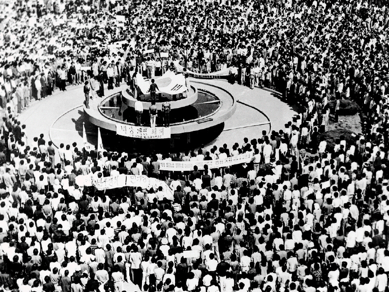

The May 18 Democratization Movement was an uprising that took place from 18 to 27, May, 1980,
in resistance against the new military junta.
The uprising took place across the Jeolla region, centered in Gwangju,
with citizens staging their resistance from the former South Jeolla Provincial Office building.
During the uprising, following the initial opening of fire by martial law troops,
citizens formed a citizens' militia to resist.
After the martial law troops withdrew, the citizens organized a community to maintain order,
a state of affairs that continued until May 27.
In the early hours of the 27th, martial law troops re-entered the South Jeolla Provincial Office,
suppressing the uprising.
Although the reality of the situation remained hidden at the time due to the suppression of the press,
the public later learned about the uprising following the transition to democracy.
You can learn more about this uprising using the menus above.